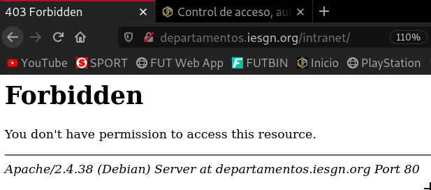
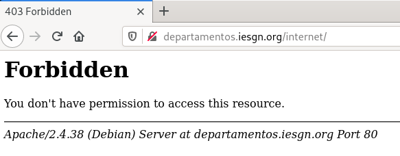
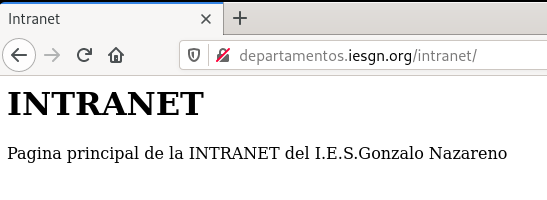
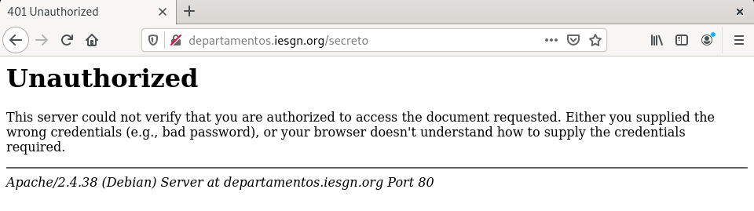
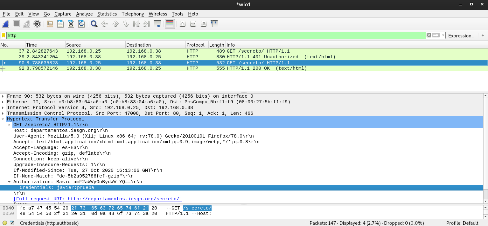
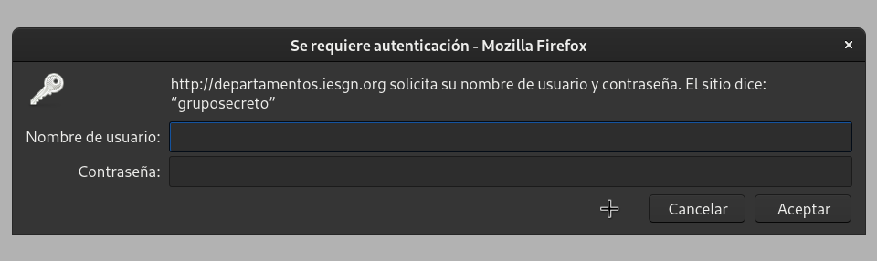
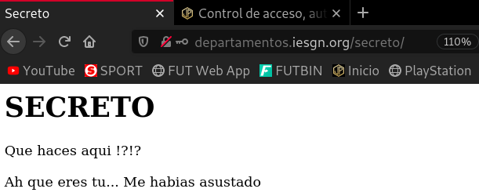
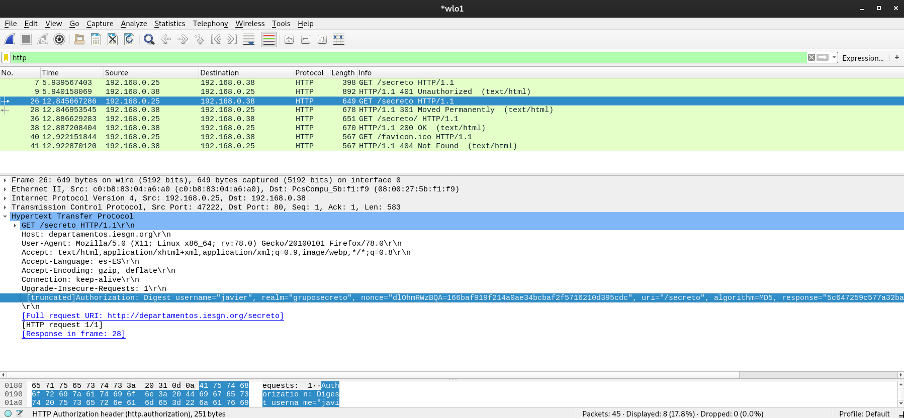
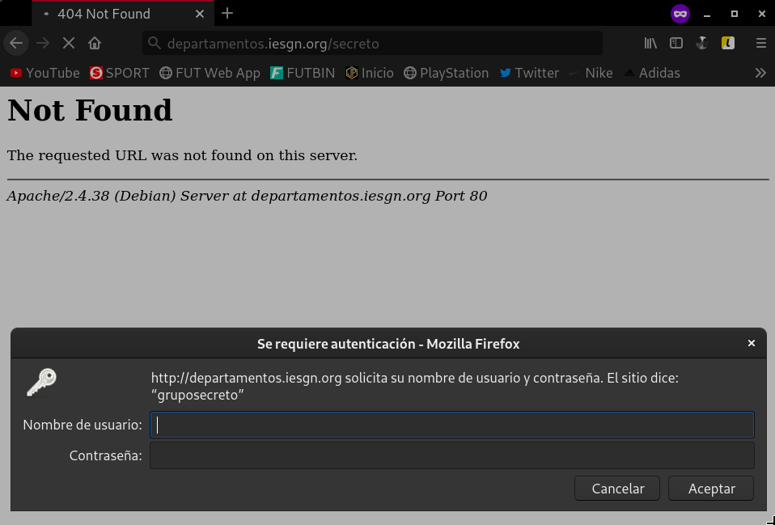
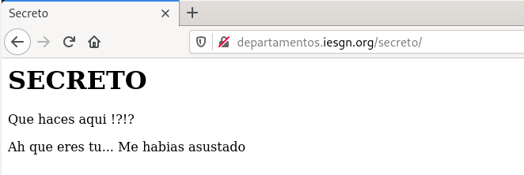

<!DOCTYPE html>
<html lang="es">

<head>
            <meta charset="utf-8">
        <meta http-equiv="X-UA-Compatible" content="IE=edge">
        <meta name="viewport" content="width=device-width, initial-scale=1">


        <title>Control de acceso, autentificación y autorización | Javier Pérez Hidalgo</title>

        <!-- Bootstrap Core CSS -->
        <link href="/theme/css/bootstrap.min.css" rel="stylesheet">

        <!-- Custom CSS -->
        <link href="/theme/css/clean-blog.min.css" rel="stylesheet">

        <!-- Code highlight color scheme -->
            <link href="/theme/css/code_blocks/darkly.css" rel="stylesheet">


        <!-- Custom Fonts -->
        <link href="https://maxcdn.bootstrapcdn.com/font-awesome/4.7.0/css/font-awesome.min.css" rel="stylesheet" type="text/css">
        <link href='https://fonts.googleapis.com/css?family=Lora:400,700,400italic,700italic' rel='stylesheet' type='text/css'>
        <link href='https://fonts.googleapis.com/css?family=Open+Sans:300italic,400italic,600italic,700italic,800italic,400,300,600,700,800' rel='stylesheet' type='text/css'>

        <!-- HTML5 Shim and Respond.js IE8 support of HTML5 elements and media queries -->
        <!-- WARNING: Respond.js doesn't work if you view the page via file:// -->
        <!--[if lt IE 9]>
            <script src="https://oss.maxcdn.com/libs/html5shiv/3.7.0/html5shiv.js"></script>
            <script src="https://oss.maxcdn.com/libs/respond.js/1.4.2/respond.min.js"></script>
        <![endif]-->


        <meta name="description" content="Control de acceso El Control de acceso en un servidor web nos permite determinar desde donde podemos acceder a los recursos del...">

        <meta name="author" content="Javier Pérez Hidalgo">

        <meta name="tags" content="web">
        <meta name="tags" content="Apache">

	                <meta property="og:locale" content="">
		<meta property="og:site_name" content="Javier Pérez Hidalgo">

	<meta property="og:type" content="article">
            <meta property="article:author" content="/author/javier-perez-hidalgo.html">
	<meta property="og:url" content="/control-de-acceso-autentificacion-y-autorizacion.html">
	<meta property="og:title" content="Control de acceso, autentificación y autorización">
	<meta property="article:published_time" content="2020-10-31 00:00:00+01:00">
            <meta property="og:description" content="Control de acceso El Control de acceso en un servidor web nos permite determinar desde donde podemos acceder a los recursos del...">

            <meta property="og:image" content="theme/images/banner-servicios.jpg">
</head>

<body class="article-control-de-acceso-autentificacion-y-autorizacion">

    <!-- Navigation -->
    <nav class="navbar navbar-default navbar-custom navbar-fixed-top">
        <div class="container-fluid">
            <!-- Brand and toggle get grouped for better mobile display -->
        <!--    <div class="navbar-header page-scroll">
                <button type="button" class="navbar-toggle" data-toggle="collapse" data-target="#bs-example-navbar-collapse-1">
                    <span class="sr-only">Toggle navigation</span>
                    <span class="icon-bar"></span>
                    <span class="icon-bar"></span>
                    <span class="icon-bar"></span>
                </button>-->
                <a class="navbar-brand" href="/">Inicio</a>
                <a class="navbar-brand" href="/categories">Categorías</a>
                <a class="navbar-brand" href="/authors">Sobre mí</a>

            </div>

            <!-- Collect the nav links, forms, and other content for toggling -->
            <div class="collapse navbar-collapse" id="bs-example-navbar-collapse-1">
                <ul class="nav navbar-nav navbar-right">

                </ul>
            </div>
            <!-- /.navbar-collapse -->
        </div>
        <!-- /.container -->
    </nav>

    <!-- Page Header -->
        <header class="intro-header" style="background-image: url('/theme/images/banner-servicios.jpg')">
        <div class="container">
            <div class="row">
                <div class="col-lg-8 col-lg-offset-2 col-md-10 col-md-offset-1">
                    <div class="post-heading">
                        <h1>Control de acceso, autentificación y autorización</h1>
                        <span class="meta">Publicado por
                                <a href="/author/javier-perez-hidalgo.html">Javier Pérez Hidalgo</a>
                             el sáb 31 octubre 2020
                        </span>
                        
                    </div>
                </div>
            </div>
        </div>
    </header>

    <!-- Main Content -->
    <div class="container">
        <div class="row">
            <div class="col-lg-8 col-lg-offset-2 col-md-10 col-md-offset-1">
    <!-- Post Content -->
    <article>
        <h2>Control de acceso</h2>
<p>El <strong>Control de acceso</strong> en un servidor web nos permite determinar desde donde podemos acceder a los recursos del servidor.</p>
<p>En <strong>apache2.2</strong> se utilizan las siguientes directivas: <a href="http://httpd.apache.org/docs/2.2/mod/mod_authz_host.html#order">order</a>, <a href="http://httpd.apache.org/docs/2.2/mod/mod_authz_host.html#allow">allow</a> y <a href="http://httpd.apache.org/docs/2.2/mod/mod_authz_host.html#deny">deny</a>. Un buen manual para que quede más claro lo puedes encontrar en este <a href="http://systemadmin.es/2011/04/la-directiva-order-de-apache">enlace</a>. La directiva <a href="http://httpd.apache.org/docs/2.2/mod/core.html#satisfy">satisfy</a> controla como se debe comportar el servidor cuando tenemos autorizaciones de control de acceso (allow, deny,…) y tenemos autorizaciones de usuarios (require).</p>
<p>En <strong>apache2.4</strong> se utilizan las siguientes directivas: <a href="https://httpd.apache.org/docs/2.4/es/mod/mod_authz_core.html#require">Require</a>, <a href="https://httpd.apache.org/docs/2.4/es/mod/mod_authz_core.html#requireall">RequireAll</a>, <a href="https://httpd.apache.org/docs/2.4/es/mod/mod_authz_core.html#requireany">RequireAny</a> y <a href="https://httpd.apache.org/docs/2.4/es/mod/mod_authz_core.html#requirenone">RequireNone</a></p>
<p><strong>1. Comprueba el control de acceso por defecto que tiene el virtual host por defecto (000-default).</strong></p>
<p>De manera predeterminada, el fichero de configuración <code>000-default</code> tiene este control de acceso:</p>
<pre>
VirtualHost *:80
</pre>

<p>Vemos que el control de acceso es de cualquier dirección, mientras el puerto establecido sea el 80.</p>
<h2>Autentificación básica</h2>
<p>El servidor web Apache puede acompañarse de distintos módulos para proporcionar diferentes modelos de autenticación. La primera forma que veremos es la más simple. Usamos para ello el módulo de autenticación básica que viene instalada “de serie” con cualquier Apache: <a href="http://httpd.apache.org/docs/2.4/es/mod/mod_auth_basic.html">mod_auth_basic</a>. La configuración que tenemos que añadir en el fichero de definición del Virtual Host a proteger podría ser algo así:</p>
<pre>
<\Directory "/var/www/miweb/privado">
  AuthUserFile "/etc/apache2/claves/passwd.txt"
  AuthName "Palabra de paso"
  AuthType Basic
  Require valid-user
<\/Directory>
</pre>

<p>El método de autentificación básica se indica en la directiva <a href="http://httpd.apache.org/docs/2.4/es/mod/core.html#authtype">AuthType</a>.</p>
<ul>
<li>En <code>Directory</code> escribimos el directorio a proteger, que puede ser el raíz de nuestro Virtual Host o un directorio interior a este.</li>
<li>En <a href="http://httpd.apache.org/docs/2.4/es/mod/mod_authn_file.html#authuserfile">AuthUserFile</a> ponemos el fichero que guardará la información de usuarios y contraseñas que debería de estar, como en este ejemplo, en un directorio que no sea visitable desde nuestro Apache. Ahora comentaremos la forma de generarlo.</li>
<li>Por último, en <a href="http://httpd.apache.org/docs/2.4/es/mod/core.html#authname">AuthName</a> personalizamos el mensaje que aparecerá en la ventana del navegador que nos pedirá la contraseña.</li>
<li>Para controlar el control de acceso, es decir, que usuarios tienen permiso para obtener el recurso utilizamos las siguientes directivas: <a href="http://httpd.apache.org/docs/2.4/es/mod/mod_authz_groupfile.html#authgroupfile">AuthGroupFile</a>, <a href="http://httpd.apache.org/docs/2.4/es/mod/core.html#require">Require user</a>, <a href="http://httpd.apache.org/docs/2.4/es/mod/core.html#require">Require group</a>.</li>
</ul>
<p>El fichero de contraseñas se genera mediante la utilidad <code>htpasswd</code>. Su sintaxis es bien sencilla. Para añadir un nuevo usuario al fichero operamos así:</p>
<pre>
htpasswd /etc/apache2/claves/passwd.txt carolina
New password:
Re-type new password:
Adding password for user carolina
</pre>

<p>Para crear el fichero de contraseñas con la introducción del primer usuario tenemos que añadir la opción <code>-c</code> (create) al comando anterior. Si por error la seguimos usando al incorporar nuevos usuarios borraremos todos los anteriores, así que cuidado con esto. Las contraseñas, como podemos ver a continuación, no se guardan en claro. Lo que se almacena es el resultado de aplicar una <a href="https://es.wikipedia.org/wiki/Funci%C3%B3n_hash">función hash</a>:</p>
<pre>
josemaria:rOUetcAKYaliE
carolina:hmO6V4bM8KLdw
alberto:9RjyKKYK.xyhk
</pre>

<p>Para denegar el acceso a algún usuario basta con que borremos la línea correspondiente al mismo. No es necesario que le pidamos a Apache que vuelva a leer su configuración cada vez que hagamos algún cambio en este fichero de contraseñas.</p>
<p>La principal ventaja de este método es su sencillez. Sus inconvenientes: lo incómodo de delegar la generación de nuevos usuarios en alguien que no sea un administrador de sistemas o de hacer un front-end para que sea el propio usuario quien cambie su contraseña. Y, por supuesto, que dichas contraseñas viajan en claro a través de la red. Si queremos evitar esto último podemos crear una <a href="https://blog.unlugarenelmundo.es/2008/09/23/chuletillas-y-viii-apache-2-con-ssl-en-debian/">instancia Apache con SSL</a>.</p>
<h3>Cómo funciona este método de autentificación</h3>
<p>Cuando desde el cliente intentamos acceder a una URL que esta controlada por el método de autentificación básico:</p>
<p><strong>1. El servidor manda una respuesta del tipo 401 <em>HTTP/1.1 401 Authorization Required</em> con una cabecera <code>WWW-Authenticate</code> al cliente de la forma:</strong></p>
<pre>
WWW-Authenticate: Basic realm="Palabra de paso"
</pre>

<p><strong>2. El navegador del cliente muestra una ventana emergente preguntando por el nombre de usuario y contraseña y cuando se rellena se manda una petición con una cabecera <code>Authorization</code></strong>:</p>
<pre>
Authorization: Basic am9zZTpqb3Nl
</pre>

<p>En realidad la información que se manda es el <strong>nombre de usuario</strong> y la <strong>contraseña en base 64</strong>, que se puede decodificar fácilmente con cualquier <a href="https://www.base64decode.org/">utilidad</a>.</p>
<h2>Autentificación tipo digest</h2>
<p>La autentificación tipo <strong>digest</strong> soluciona el problema de la transferencia de contraseñas en claro sin necesidad de usar SSL. El procedimiento, como veréis, es muy similar al tipo básico pero cambiando algunas de las directivas y usando la utilidad <code>htdigest</code> en lugar de <code>htpassword</code> para crear el fichero de contraseñas. El módulo de autenticación necesario suele venir con Apache pero no habilitado por defecto. Para activarlo usamos la utilidad <code>a2enmod</code> y, a continuación reiniciamos el servidor Apache:</p>
<pre>
a2enmod auth_digest
/etc/init.d/apache2 restart
</pre>

<p>Luego incluimos una sección como esta en el fichero de configuración de nuestro Virtual Host:</p>
<pre>
<\Directory "/var/www/miweb/privado">
  AuthType Digest
  AuthName "dominio"
  AuthUserFile "/etc/claves/digest.txt"
  Require valid-user
<\/Directory>
</pre>

<p>Como vemos, es muy similar a la configuración necesaria en la autenticación básica. La directiva <code>AuthName</code> que en la autenticación básica se usaba para mostrar un mensaje en la ventana que pide el usuario y contraseña, ahora se usa también para identificar un nombre de dominio (realm) que debe de coincidir con el que aparezca después en el fichero de contraseñas. Dicho esto, vamos a generar dicho fichero con la utilidad htdigest:</p>
<pre>
htdigest -c /etc/claves/digest.txt dominio josemaria
Adding password for josemaria in realm dominio.
New password:
Re-type new password:
</pre>

<p>Al igual que ocurría con <code>htpassword</code>, la opción <code>-c</code> (create) sólo debemos de usarla al crear el fichero con el primer usuario. Luego añadiremos los restantes usuarios prescindiendo de ella. A continuación vemos el fichero que se genera después de añadir un segundo usuario:</p>
<pre>
josemaria:dominio:8d6af4e11e38ee8b51bb775895e11e0f
gemma:dominio:dbd98f4294e2a49f62a486ec070b9b8c
</pre>

<h3>Cómo funciona este método de autentificación</h3>
<p>Cuando desde el cliente intentamos acceder a una URL que esta controlada por el método de autentificación de tipo digest:</p>
<p><strong>1. El servidor manda una respuesta del tipo 401 <em>HTTP/1.1 401 Authorization Required</em> con una cabecera <code>WWW-Authenticate</code> al cliente de la forma:</strong></p>
<pre>
WWW-Authenticate: Digest realm="dominio",
                  nonce="cIIDldTpBAA=9b0ce6b8eff03f5ef8b59da45a1ddfca0bc0c485",
                  algorithm=MD5,
                  qop="auth"
</pre>

<p><strong>2. El navegador del cliente muestra una ventana emergente preguntando por el nombre de usuario y contraseña y cuando se rellena se manda una petición con una cabecera <code>Authorization</code></strong></p>
<pre>
Authorization   Digest username="jose",
               realm="dominio",
               nonce="cIIDldTpBAA=9b0ce6b8eff03f5ef8b59da45a1ddfca0bc0c485",
               uri="/digest/",
               algorithm=MD5,
               response="814bc0d6644fa1202650e2c404460a21",
               qop=auth,
               nc=00000001,
               cnonce="3da69c14300e446b"
</pre>

<p>La información que se manda es responde que en este caso esta cifrada usando md5 y que se calcula de la siguiente manera:</p>
<ul>
<li>Se calcula el md5 del nombre de usuario, del dominio (realm) y la contraseña, la llamamos <strong>HA1</strong>.</li>
<li>Se calcula el md5 del método de la petición (por ejemplo GET) y de la uri a la que estamos accediendo, la llamamos <strong>HA2</strong>.</li>
<li>El reultado que se manda es el md5 de HA1, un número aleatorio (nonce), el contador de peticiones (nc), el qop y el HA2.</li>
</ul>
<p>Una vez que lo recibe el servidor, puede hacer la misma operación y comprobar si la información que se ha enviado es válida, con lo que se permitiría el acceso.</p>
<h2>Ejercicios</h2>
<h5>Crea un escenario en Vagrant o reutiliza uno de los que tienes en ejercicios anteriores, que tenga un servidor con una red pública, y una privada y un cliente conectado a la red privada. Crea un host virtual <code>departamentos.iesgn.org</code>.</h5>
<p>He creado este fichero Vagrantfile para definir el escenario:</p>
<pre>
# -*- mode: ruby -*-
# vi: set ft=ruby :

Vagrant.configure("2") do |config|

 config.vm.define :servidor do |servidor|
  servidor.vm.box="debian/buster64"
  servidor.vm.hostname="servidor"
  servidor.vm.network :public_network, :bridge=>"wlo1"
  servidor.vm.network :private_network, ip: "192.168.150.1", virtualbox__intnet: "redprivadaApache"
 end

 config.vm.define :cliente do |cliente|
  cliente.vm.box="debian/buster64"
  cliente.vm.hostname="cliente"
  cliente.vm.network :private_network, ip: "192.168.150.10", virtualbox__intnet: "redprivadaApache"
 end

end
</pre>

<p>Confirmamos que en la máquina <strong>servidor</strong> se han creado correctamente las interfaces de red pública y privada:</p>
<pre>
vagrant@servidor:~$ ip a
1: lo: <LOOPBACK,UP,LOWER_UP> mtu 65536 qdisc noqueue state UNKNOWN group default qlen 1000
    link/loopback 00:00:00:00:00:00 brd 00:00:00:00:00:00
    inet 127.0.0.1/8 scope host lo
       valid_lft forever preferred_lft forever
    inet6 ::1/128 scope host
       valid_lft forever preferred_lft forever
2: eth0: <BROADCAST,MULTICAST,UP,LOWER_UP> mtu 1500 qdisc pfifo_fast state UP group default qlen 1000
    link/ether 08:00:27:8d:c0:4d brd ff:ff:ff:ff:ff:ff
    inet 10.0.2.15/24 brd 10.0.2.255 scope global dynamic eth0
       valid_lft 86000sec preferred_lft 86000sec
    inet6 fe80::a00:27ff:fe8d:c04d/64 scope link
       valid_lft forever preferred_lft forever
3: eth1: <BROADCAST,MULTICAST,UP,LOWER_UP> mtu 1500 qdisc pfifo_fast state UP group default qlen 1000
    link/ether 08:00:27:5b:f1:f9 brd ff:ff:ff:ff:ff:ff
    inet 192.168.0.38/24 brd 192.168.0.255 scope global dynamic eth1
       valid_lft 86009sec preferred_lft 86009sec
    inet6 fe80::a00:27ff:fe5b:f1f9/64 scope link
       valid_lft forever preferred_lft forever
4: eth2: <BROADCAST,MULTICAST,UP,LOWER_UP> mtu 1500 qdisc pfifo_fast state UP group default qlen 1000
    link/ether 08:00:27:28:bb:c2 brd ff:ff:ff:ff:ff:ff
    inet 192.168.150.1/24 brd 192.168.150.255 scope global eth2
       valid_lft forever preferred_lft forever
    inet6 fe80::a00:27ff:fe28:bbc2/64 scope link
       valid_lft forever preferred_lft forever
</pre>

<p>Podemos ver como la IP pública que posee es la <strong>192.168.0.38</strong> y la IP privada la <strong>192.168.150.1</strong>. Pero aún no hemos cambiado la puerta de enlace para que tenga conectividad a internet a través de la máquina anfitriona:</p>
<pre>
vagrant@servidor:~$ sudo ip r replace default via 192.168.0.1

vagrant@servidor:~$ ip r
default via 192.168.0.1 dev eth1
10.0.2.0/24 dev eth0 proto kernel scope link src 10.0.2.15
192.168.0.0/24 dev eth1 proto kernel scope link src 192.168.0.38
192.168.150.0/24 dev eth2 proto kernel scope link src 192.168.150.1
</pre>

<p>Ya sí puede acceder a mi router doméstico y por tanto posee conexión.</p>
<p>Vamos a hacer lo mismo para la máquina <strong>cliente</strong>. Vemos las interfaces de red:</p>
<pre>
vagrant@cliente:~$ ip a
1: lo: <LOOPBACK,UP,LOWER_UP> mtu 65536 qdisc noqueue state UNKNOWN group default qlen 1000
    link/loopback 00:00:00:00:00:00 brd 00:00:00:00:00:00
    inet 127.0.0.1/8 scope host lo
       valid_lft forever preferred_lft forever
    inet6 ::1/128 scope host
       valid_lft forever preferred_lft forever
2: eth0: <BROADCAST,MULTICAST,UP,LOWER_UP> mtu 1500 qdisc pfifo_fast state UP group default qlen 1000
    link/ether 08:00:27:8d:c0:4d brd ff:ff:ff:ff:ff:ff
    inet 10.0.2.15/24 brd 10.0.2.255 scope global dynamic eth0
       valid_lft 85783sec preferred_lft 85783sec
    inet6 fe80::a00:27ff:fe8d:c04d/64 scope link
       valid_lft forever preferred_lft forever
3: eth1: <BROADCAST,MULTICAST,UP,LOWER_UP> mtu 1500 qdisc pfifo_fast state UP group default qlen 1000
    link/ether 08:00:27:93:04:32 brd ff:ff:ff:ff:ff:ff
    inet 192.168.150.10/24 brd 192.168.150.255 scope global eth1
       valid_lft forever preferred_lft forever
    inet6 fe80::a00:27ff:fe93:432/64 scope link
       valid_lft forever preferred_lft forever
</pre>

<p>Nos ha creado bien la dirección IP de la red privada, que es la <strong>192.168.150.10</strong>. Cambiamos la puerta de enlace para que tenga conexión a la máquina servidor:</p>
<pre>
vagrant@cliente:~$ sudo ip r replace default via 192.168.150.1

vagrant@cliente:~$ ip r
default via 192.168.150.1 dev eth1
10.0.2.0/24 dev eth0 proto kernel scope link src 10.0.2.15
192.168.150.0/24 dev eth1 proto kernel scope link src 192.168.150.10
</pre>

<p>Y ahora sí, tenemos configuradas las dos máquinas correctamente y podemos empezar a realizar los procedimientos.</p>
<p>Vamos a instalar <strong>apache</strong>. Para esto, antes de nada voy a actualizar los paquetes necesarios, y voy a desinstalar los que ya no hagan falta. Esto lo hago porque la box que estoy utilizando es de <strong>Debian 10.4</strong> y a día de hoy la versión estable es la <strong>10.6</strong>:</p>
<pre>
apt update && apt upgrade -y && apt autoremove -y && apt install apache2 -y
</pre>

<p>Una vez instalado Apache, podemos empezar a realizar las configuraciones. Lo primero antes de crear el sitio web, es habilitar la ruta donde vamos a crear la estructura de nuestra página. En mi caso la voy a situar en <code>/srv/departamentos</code>, esta dirección por defecto no viene habilitada para servir los archivos que creemos, por tanto, lo primero sería darle permisos, y para ello vamos a descomentar las siguientes líneas en <code>/etc/apache2/apache2.conf</code>:</p>
<pre>
<\Directory /srv/\>
        Options Indexes FollowSymLinks
        AllowOverride None
        Require all granted
<\/Directory\>
</pre>

<p><strong>Atención:</strong> a esta configuración hay que eliminarle los carácteres <code>\</code>, que he tenido que introducir para escapar los carácteres siguientes, así que en caso de querer copiar la configuración, debemos tener en cuenta esto.</p>
<p>El siguiente paso sería crear el archivo de configuración del sitio web. Podemos copiar el fichero por defecto, que se encuentra en <code>/etc/apache2/sites-available</code> y a partir de éste, personalizar el nuevo:</p>
<pre>
root@servidor:/etc/apache2/sites-available# cp 000-default.conf departamentos.conf

root@servidor:/etc/apache2/sites-available# nano departamentos.conf
</pre>

<p>Editamos las siguientes líneas del fichero <code>departamentos.conf</code>:</p>
<pre>
ServerName departamentos.iesgn.org
DocumentRoot /srv/departamentos
</pre>

<p>Una vez terminado este fichero, tenemos que activar esta página:</p>
<pre>
root@servidor:/etc/apache2/sites-available# a2ensite departamentos.conf
Enabling site departamentos.
To activate the new configuration, you need to run:
  systemctl reload apache2
</pre>

<p>Ya solo nos falta crear el <code>index.html</code> que hemos especificado en la configuración de la página que se iba a encontrar en la ruta <code>/srv/departamentos</code>:</p>
<pre>
root@servidor:/srv# mkdir departamentos

root@servidor:/srv# cd departamentos/

root@servidor:/srv/departamentos# nano index.html
</pre>

<p>Reiniciamos el servicio y ya podemos visualizar la página.</p>
<pre>
systemctl restart apache2
</pre>

<p>Ojo, para poder ver esta web, debemos indicar en el archivo <code>/etc/hosts</code> de nuestra máquina anfitriona esta línea:</p>
<pre>
192.168.0.38    departamentos.iesgn.org
</pre>

<p>Y para poder ver esta web en la máquina <strong>cliente</strong>, debemos indicar en su archivo <code>/etc/hosts</code> esta línea:</p>
<pre>
192.168.150.1    departamentos.iesgn.org
</pre>

<h5>1. A la URL <code>departamentos.iesgn.org/intranet</code> sólo se debe tener acceso desde el cliente de la red local, y no se pueda acceder desde la anfitriona por la red pública. A la URL <code>departamentos.iesgn.org/internet</code>, sin embargo, sólo se debe tener acceso desde la anfitriona por la red pública, y no desde la red local.</h5>
<p>Lo primero sería crear en <code>/srv/departamentos</code> dos carpetas: una para <strong>intranet</strong> y otra para <strong>internet</strong>, y dentro de ellas crear un fichero <code>index.html</code>:</p>
<pre>
root@servidor:srv/departamentos# mkdir intranet

root@servidor:srv/departamentos# cd intranet/

root@servidor:srv/departamentos/intranet# cp ../index.html ./

root@servidor:srv/departamentos/intranet# nano index.html

root@servidor:srv/departamentos/intranet# cd ..

root@servidor:srv/departamentos# mkdir internet

root@servidor:srv/departamentos# cp index.html ./internet/

root@servidor:srv/departamentos# cd internet/

root@servidor:srv/departamentos/internet# nano index.html
</pre>

<p>Una vez tenemos creados las dos páginas webs, es el momento de establecer el control de acceso.</p>
<p>Las restricciones de acceso se llevan a cabo en el fichero de configuración de la web, es decir, en <code>/etc/apache2/sites-available/departamentos.conf</code>. Se nos pide que a la página <code>Intranet</code> pueda acceder la máquina conectada a la red local <strong>192.168.150.0/24</strong>, es decir nuestra mv, cuya IP es <strong>192.168.150.10</strong>, y a la página <code>Internet</code> cualquier equipo que no pertenezca a la red local.
Para ello el fichero debe quedar así:</p>
<pre>
<\Directory /srv/departamentos/intranet \>
 Require ip 192.168.150
<\/Directory\>

<\Directory /srv/departamentos/internet \>
 <\RequireAll\>
   Require all granted
   Require not ip 192.168.150
 <\/RequireAll\>
<\/Directory\>
</pre>

<p><strong>Atención:</strong> a esta configuración hay que eliminarle los carácteres <code>\</code>, que he tenido que introducir para escapar los carácteres siguientes, así que en caso de querer copiar la configuración, debemos tener en cuenta esto.</p>
<p>Reiniciamos el servicio:</p>
<pre>
systemctl restart apache2
</pre>

<p>Con esto lo que estamos haciendo es:</p>
<ul>
<li>
<p><strong>Máquina anfitrión:</strong> permitirle el acceso a la página <code>departamentos.iesgn.org/internet/</code>.</p>
<ul>
<li>Si accedemos a <code>departamentos.iesgn.org/internet/</code>:</li>
</ul>
<p></p>
<ul>
<li>Si accedemos a <code>departamentos.iesgn.org/intranet/</code>:</li>
</ul>
<p></p>
</li>
<li>
<p><strong>Máquina cliente:</strong> permitirle el acceso a la página <code>departamentos.iesgn.org/intranet/</code>.</p>
<ul>
<li>Si accedemos a <code>departamentos.iesgn.org/internet/</code>:</li>
</ul>
<p></p>
<ul>
<li>Si accedemos a <code>departamentos.iesgn.org/intranet/</code>:</li>
</ul>
<p></p>
</li>
</ul>
<h5>2. Autentificación básica. Limita el acceso a la URL <code>departamentos.iesgn.org/secreto</code>. Comprueba las cabeceras de los mensajes HTTP que se intercambian entre el servidor y el cliente. ¿Cómo se manda la contraseña entre el cliente y el servidor?. Entrega una breve explicación del ejercicio.</h5>
<p>Lo primero sería crear en <code>/srv/departamentos</code> la carpeta <strong>secreto</strong> y dentro de ella crear un fichero <code>index.html</code>:</p>
<pre>
root@servidor:/srv/departamentos# mkdir secreto

root@servidor:/srv/departamentos# cp index.html ./secreto/

root@servidor:/srv/departamentos# cd secreto/

root@servidor:/srv/departamentos/secreto# nano index.html
</pre>

<p>Ahora vamos a configurar para que a la página <code>departamentos.iesgn.org/secreto</code> solo se pueda acceder si la persona está autorizada y posee un usuario y una contraseña.</p>
<p>Para ello, lo primero sería crear el <strong>archivo de contraseñas</strong> de Apache:</p>
<pre>
root@servidor:/srv/departamentos/secreto# htpasswd -c /srv/departamentos/secreto/.htpasswd javier
New password:
Re-type new password:
Adding password for user javier
</pre>

<p>Si quisiéramos añadir un nuevo usuario, deberíamos introducir el mismo comando pero sin la opción <code>-c</code>, ya que sino, nos crearía un nuevo un archivo machacando el ya existente.</p>
<p>Nos quedaría especificar en el <code>/etc/apache2/sites-available/departamentos.conf</code> esta configuración de autenticación básica. Debemos añadir algo así:</p>
<pre>
<\Directory /srv/departamentos/secreto \>
 AuthType Basic
 AuthName "Identifiquese para acceder a esta pagina"
 AuthUserFile /srv/departamentos/secreto/.htpasswd
 Require valid-user
<\/Directory\>
</pre>

<p><strong>Atención:</strong> a esta configuración hay que eliminarle los carácteres <code>\</code>, que he tenido que introducir para escapar los carácteres siguientes, así que en caso de querer copiar la configuración, debemos tener en cuenta esto.</p>
<p>Reiniciamos el servicio:</p>
<pre>
systemctl restart apache2
</pre>

<p>Si ahora probamos a acceder a <code>departamentos.iesgn.org/secreto</code>:</p>
<p></p>
<p>Vemos que nos pide que iniciemos sesión ya que el contenido está protegido. Vamos a ver que puede pasar:</p>
<ul>
<li>Iniciamos sesión correctamente:</li>
</ul>
<p></p>
<ul>
<li>No iniciamos sesión o de manera incorrecta:</li>
</ul>
<p></p>
<p>A primera vista podemos creer que este método de autenticación es segura, pero aún no he comentado el gran fallo que tiene. ¿Qué es lo último que deseamos cuando nos <em>logueamos</em> en una web? Exacto, que nuestras credenciales y nuestros datos no se conozcan y sean seguros, pues la <strong>autenticación básica</strong> no cuida esto, sino que envía nuestras contraseñas sin ningún tipo de cifrado y al descubierto, por lo que estamos totalmente expuestos.</p>
<p>He hecho una prueba capturando el tráfico, en la que podemos ver como cualquiera que esté escuchando el tráfico de la red, podría ver nuestros datos.</p>
<p></p>
<p>Si nos fijamos en la línea seleccionada, que hace referencia a la petición que hemos hecho con nuestras credenciales, podemos ver como nos muestra la contraseña.</p>
<h5>3. Cómo hemos visto la autentificación básica no es segura, modifica la autentificación para que sea del tipo <code>digest</code>, y sólo sea accesible a los usuarios pertenecientes al grupo <code>directivos</code>. Comprueba las cabeceras de los mensajes HTTP que se intercambian entre el servidor y el cliente. ¿Cómo funciona esta autentificación?</h5>
<p>(Me he equivocado y he añadido los usuarios al grupo <strong>gruposecreto</strong> en vez de <strong>directivos</strong>).</p>
<p>Para llevar a cabo una autenticación de tipo <strong>Digest</strong>, antes debemos habilitar su módulo:</p>
<pre>
a2enmod auth_digest
</pre>

<p>El proceso es muy parecido al anterior, por tanto lo primero sería crear el <strong>archivo de contraseñas</strong>:</p>
<pre>
root@servidor:/srv/departamentos/secreto# htdigest -c /srv/departamentos/secreto/.htdigest gruposecreto javier
Adding password for javier in realm gruposecreto.
New password:
Re-type new password:
</pre>

<p>A diferencia de la autenticación básica, en esta debemos añadir un nombre de domino, es decir, un grupo al que va a pertenecer el usuario.</p>
<p>Si quisiéramos añadir un nuevo usuario, deberíamos introducir el mismo comando pero sin la opción <code>-c</code>, ya que sino, nos crearía un nuevo un archivo machacando el ya existente.</p>
<p>Nos quedaría especificar en el <code>/etc/apache2/sites-available/departamentos.conf</code> esta configuración de autenticación básica. Debemos añadir algo así:</p>
<pre>
<\Directory /var/www/departamentos/secreto \>
 AuthType Digest
 AuthName "gruposecreto"
 AuthUserFile /var/www/departamentos/secreto/.htdigest
 Require valid-user
<\/Directory\>
</pre>

<p><strong>Atención:</strong> a esta configuración hay que eliminarle los carácteres <code>\</code>, que he tenido que introducir para escapar los carácteres siguientes, así que en caso de querer copiar la configuración, debemos tener en cuenta esto.</p>
<p>Reiniciamos el servicio:</p>
<pre>
systemctl restart apache2
</pre>

<p>Si ahora probamos a acceder a <code>departamentos.iesgn.org/secreto</code>:</p>
<p></p>
<p>Vemos que nos pide que iniciemos sesión ya que el contenido está protegido. Vamos a ver que puede pasar:</p>
<ul>
<li>Iniciamos sesión correctamente:</li>
</ul>
<p></p>
<ul>
<li>No iniciamos sesión o de manera incorrecta:</li>
</ul>
<p></p>
<p>Antes vimos que la <strong>autenticación básica</strong> no era segura, vamos a ver si la <strong>autenticación digest</strong> lo es.</p>
<p>He hecho una prueba capturando el tráfico.</p>
<p></p>
<p>Si nos fijamos en la línea seleccionada, que hace referencia a la petición que hemos hecho con nuestras credenciales, podemos ver como no nos muestra la contraseña como pasaba anteriormente.</p>
<h5>4. Vamos a combinar el control de acceso (tarea 6) y la autenticación (tareas 7 y 8), y vamos a configurar el virtual host para que se comporte de la siguiente manera: el acceso a la URL <code>departamentos.iesgn.org/secreto</code> se hace forma directa desde la intranet, desde la red pública te pide la autenticación. Muestra el resultado al profesor.</h5>
<p>Si queremos que los equipos conectados a la red local, es decir, los que posean una IP <strong>192.168.150.X</strong>, accedan de manera directa a la URL <code>departamentos.iesgn.org/secreto</code>, pero los demás equipos tengan que iniciar sesión y validarse para acceder, debemos editar el fichero <code>/etc/apache2/sites-available/departamentos.conf</code> de manera que tenga este aspecto:</p>
<pre>
<\Directory /srv/departamentos/secreto \>
 AuthType Digest
 AuthName "gruposecreto"
 AuthUserFile /srv/departamentos/secreto/.htpasswd
 Require valid-user
 <\RequireAll\>
  Require all granted
  Require ip 192.168.150
 <\/RequireAll\>
<\/Directory\>
</pre>

<p><strong>Atención:</strong> a esta configuración hay que eliminarle los carácteres <code>\</code>, que he tenido que introducir para escapar los carácteres siguientes, así que en caso de querer copiar la configuración, debemos tener en cuenta esto.</p>
<p>Reiniciamos el servicio:</p>
<pre>
systemctl restart apache2
</pre>

<p>Si ahora probamos a acceder a <code>departamentos.iesgn.org/secreto</code>:</p>
<ul>
<li>
<p><strong>Máquina anfitrión:</strong></p>
<p></p>
</li>
<li>
<p><strong>Máquina cliente:</strong></p>
<p></p>
</li>
</ul>
    </article>

        <div class="tags">
            <p><strong><a href="/tags">tags:</a></strong> <a href="/tag/web.html">web</a>, <a href="/tag/apache.html">Apache</a></p>
        </div>

    <hr>

            </div>
        </div>
    </div>

    <hr>

    <!-- Footer -->
    <footer>
        <div class="container">
            <div class="row">
                <div class="col-lg-8 col-lg-offset-2 col-md-10 col-md-offset-1">
                    <ul class="list-inline text-center">
                            <li>
                                <a href="https://www.instagram.com/javierpzh/">
                                    <span class="fa-stack fa-lg">
                                        <i class="fa fa-circle fa-stack-2x"></i>
                                        <i class="fa fa-instagram fa-stack-1x fa-inverse"></i>
                                    </span>
                                </a>
                            </li>
                            <li>
                                <a href="https://twitter.com/jperezhid_">
                                    <span class="fa-stack fa-lg">
                                        <i class="fa fa-circle fa-stack-2x"></i>
                                        <i class="fa fa-twitter fa-stack-1x fa-inverse"></i>
                                    </span>
                                </a>
                            </li>
                            <li>
                                <a href="https://github.com/javierpzh">
                                    <span class="fa-stack fa-lg">
                                        <i class="fa fa-circle fa-stack-2x"></i>
                                        <i class="fa fa-github fa-stack-1x fa-inverse"></i>
                                    </span>
                                </a>
                            </li>
                            <li>
                                <a href="https://www.facebook.com/javier.perezhidalgo.904">
                                    <span class="fa-stack fa-lg">
                                        <i class="fa fa-circle fa-stack-2x"></i>
                                        <i class="fa fa-facebook fa-stack-1x fa-inverse"></i>
                                    </span>
                                </a>
                            </li>
                            <li>
                                <a href="mailto:javierperezhidalgo01@gmail.com">
                                    <span class="fa-stack fa-lg">
                                        <i class="fa fa-circle fa-stack-2x"></i>
                                        <i class="fa fa-envelope-square fa-stack-1x fa-inverse"></i>
                                    </span>
                                </a>
                            </li>
                    </ul>
<p class="copyright text-muted">
    Blog creado por <a href="http://www.instagram.com/javierpzh/">Javier Pérez Hidalgo</a>,
    con la utilización de <a href="https://blog.getpelican.com/">Pelican</a>. <br />        &copy;  Javier Pérez Hidalgo
</p>                </div>
            </div>
        </div>
    </footer>

    <!-- jQuery -->
    <script src="/theme/js/jquery.min.js"></script>

    <!-- Bootstrap Core JavaScript -->
    <script src="/theme/js/bootstrap.min.js"></script>

        <!-- Custom Theme JavaScript -->
        <script src="/theme/js/clean-blog.min.js"></script>

</body>

</html>